04 - TURN IN - Tree Labeling in QGIS
Note: To make sure you are viewing the most recent version of this lab guide, hold Shift and click the browser refresh button.
Turn-in for grading: Complete and submit this exercise only if assigned by your instructor.
Introduction
Now that you have QGIS installed and configured, it's time to put it to work! This lab introduces you to the QGIS interface through a hands-on tree crown annotation project. You'll learn essential QGIS skills while creating valuable training data by digitizing individual tree crowns from high-resolution aerial imagery.
What you'll be doing: You'll work with a QGIS project that contains high-resolution NAIP (National Agriculture Imagery Program) imagery from before and after the Castle Fire. Your task is to generate random sample locations, use them to select a subset of grid cells, and label trees in both postfire and prefire imagery so the results can support machine learning validation work.
Why this matters: The data you create will be used to train machine learning models for automated tree detection and counting. Accurate tree crown delineation is fundamental to forest inventory, wildfire risk assessment, and ecosystem monitoring. This workflow teaches you core GIS skills while contributing to real research applications.
Learning Objectives
By the end of this lab, you will be able to:
- Navigate the QGIS interface and use essential navigation tools
- Work with layers, including reordering, toggling visibility, and exploring metadata
- Query attribute tables and select features based on attributes and location
- Use geoprocessing tools to create random points within a study area
- Create and edit shapefile layers for new spatial labels
- Use a docked attribute table to move systematically through sampled grid cells
- Digitize rectangular tree labels from aerial imagery
- Export spatial data in GeoJSON format with proper naming conventions
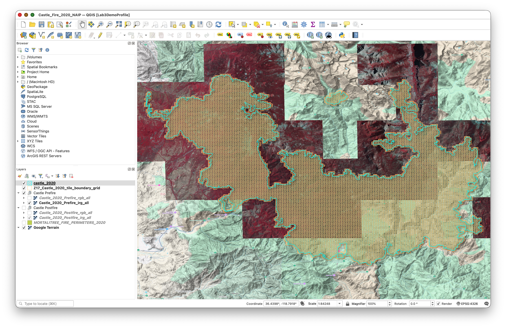
Getting Started
Download and Extract the Project Package
Download the CastleFire.zip file using this direct download link:
This package contains everything you need to get started, with best-practice folder structure and naming conventions already set up for you.
What's included in the .zip file:
- Pre-configured QGIS project file:
Castle_Fire_2020_NAIP.qgz - Raw data layers and imagery references, including:
castle_2020(Fi re Perimeter)Z17_Castle_2020_tile_boundary_grid(XYZ Tile Grid)Castle PrefireCastle_2020_Prefire_rgb_allCastle_2020_Prefire_irg_all
Castle PostfireCastle_2020_Postfire_rgb_allCastle_2020_Postfire_irg_all
MORTALITREE_FIRE_PERIMETERS_2020Google Terrain basemap
- Pre-built folder structure following GIS best practices
- Empty directories ready for your work
- Map layout template
Extract the .zip file:
- Download
CastleFire.zip - Extract it to your Documents folder (or another location you can easily access)
What's in the Raw Data Folder
Inside data/raw/ you'll find:
- Tile boundary grid:
Z17_Castle_2020_tile_boundary_grid - Study area outline:
castle_2020 - Pre-fire imagery group:
Castle Prefire - Post-fire imagery group:
Castle Postfire - Fire perimeter layer:
MORTALITREE_FIRE_PERIMETERS_2020 - Terrain basemap:
Google Terrain
Important: Never modify or delete files in the raw/ folder. These are your originals. All your work will be saved to the processed/ and outputs/ folders.
Part 1: Open and Explore the Project
Step 1: Open the Project File
Now that you've extracted the project package, let's open the pre-configured QGIS project:
- Launch QGIS
- Go to Project > Open (or press
Ctrl+O/Cmd+O) - Navigate to your extracted
CastleFirefolder - Select the QGIS project file
Castle_Fire_2020_NAIP.qgz- Example path:
~/Documents/CastleFire/Castle_Fire_2020_NAIP.qgz
- Example path:
- Click Open
The project should load with the tile boundary grid, the study area outline, pre-fire and post-fire imagery groups, the 2020 fire perimeter layer, and the Google Terrain basemap visible in the Layers Panel. Everything is pre-configured and ready to use!
Try this:
- Use your mouse wheel to zoom in and out
- Use Zoom to Layer on the grid layer to see all tile boundaries again
- Hold spacebar and drag to pan around the imagery
- Notice how the NAIP imagery refreshes as you navigate and change scales.
Step 2: Explore the Layers Panel
The Layers Panel (usually on the left side) shows all layers in your project. Let's explore how it works:
Layer Management:
To Reorder Layers: Click and drag layers up or down
To Toggle Layer Visibility: Click the checkbox next to each layer name
- Turn the grid layer off and on
- Notice how you can see the imagery without the grid overlay
Layer Properties: Right-click any layer and select Properties
- Explore the different tabs (Source, Symbology, etc.)
- Don't make changes yet—just observe what's available
Step 3: Explore Layer Metadata
Metadata tells you important information about your spatial data:
- Right-click the grid layer and select Properties
- Navigate to the Information tab
Review the metadata including:
- CRS (Coordinate Reference System): Should be WGS84 (EPSG:4326)
- Extent: The bounding box coordinates
- Feature count: How many grid cells exist
- Geometry type: Should be "Polygon"
Repeat for the NAIP imagery layer
- Note the source URL for the XYZ tiles
- Check the CRS (should be EPSG:26911 NAD83/UTM zone 11N)
Why this matters: Understanding your data's coordinate system, extent, and properties is essential before any spatial analysis. Mismatched coordinate systems are one of the most common GIS errors.
Part 2: Working with Attributes and Selections
Step 4: Open and Explore the Attribute Table
Every vector layer has an attribute table containing information about each feature:
- Right-click the
Z17_Castle_2020_tile_boundary_gridin the Layers Panel - Select Open Attribute Table
- Examine the table structure:
- Each row represents one grid cell
- Columns contain attributes like tile coordinates (X, Y, Z)
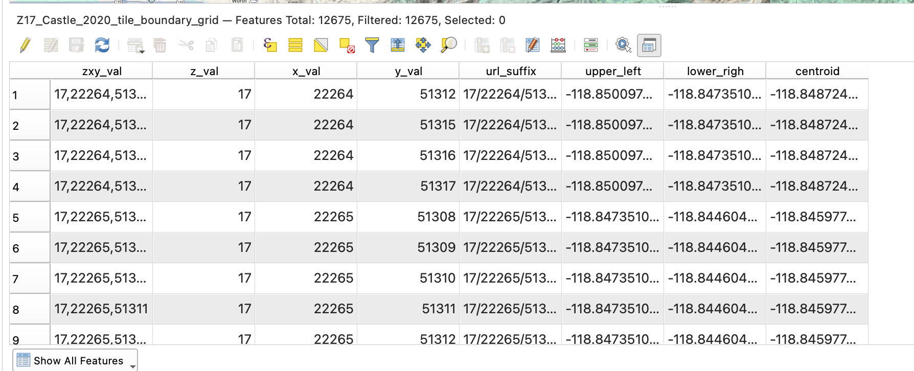
Understanding the Grid:
- Z: Zoom level (should be 18)
- X: Tile column number
- Y: Tile row number
- These Z/X/Y values follow the Web Mercator tiling scheme used by web maps
Part 3: Geoprocessing and Random Selection
Step 5: Create 20 Random Points Inside the Castle Fire Boundary
Now you will create a set of random sample locations that will guide your labeling work.
- Go to Processing > Toolbox.
- In the Processing Toolbox search bar, type
random points inside polygons. - Open Random points inside polygons (fixed).
- Configure the tool:
- Input layer:
castle_2020 - Sampling strategy:
Points count - Point count:
20 - Minimum distance between points:
100 - Random points: Save as
random20.geojsonin yourdata/folder
- Input layer:
- Click Run.
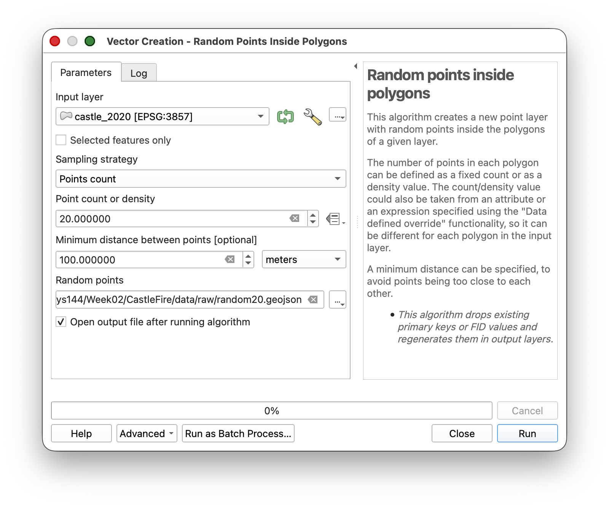
You should now see 20 random points inside the castle_2020 boundary.
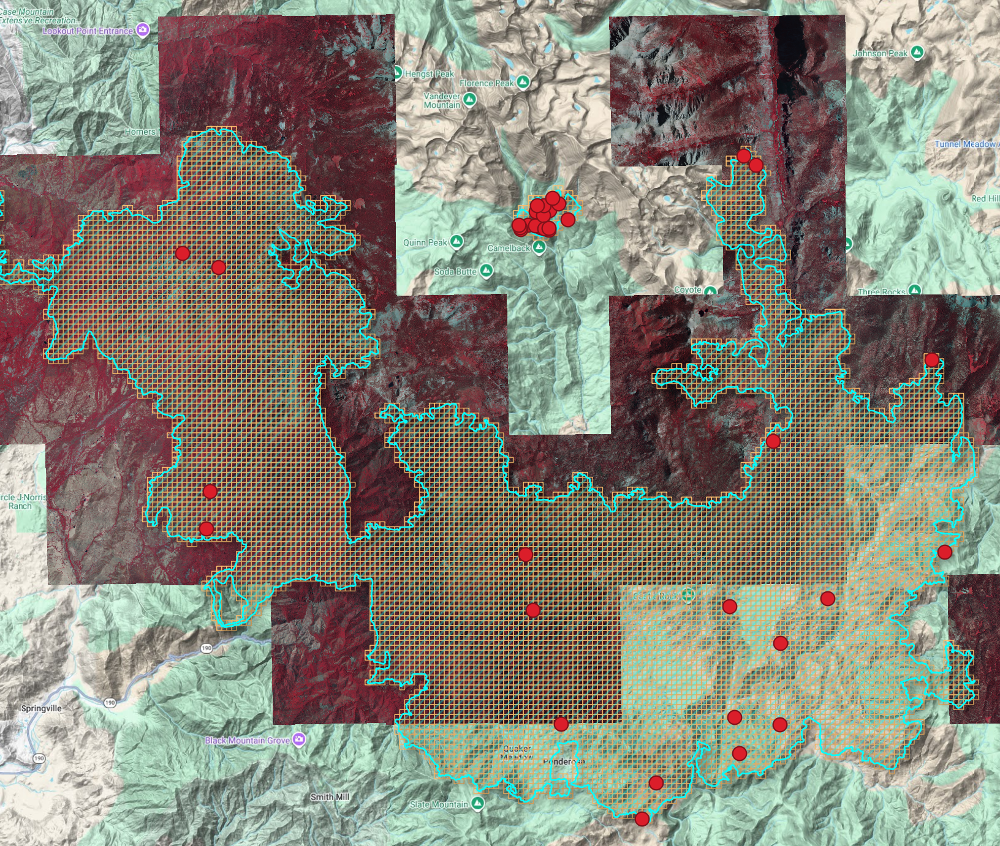
Notice that there may be a cluster of points in an area where there is no imagery. If this is the case, do the following:
- Use the Select Features tool in the main QGIS toolbar.
- With the
castle_2020layer selected in the Layers Panel, click the largecastle_2020polygon that covers the area where imagery is actually available. Confirm that the correct polygon is selected.
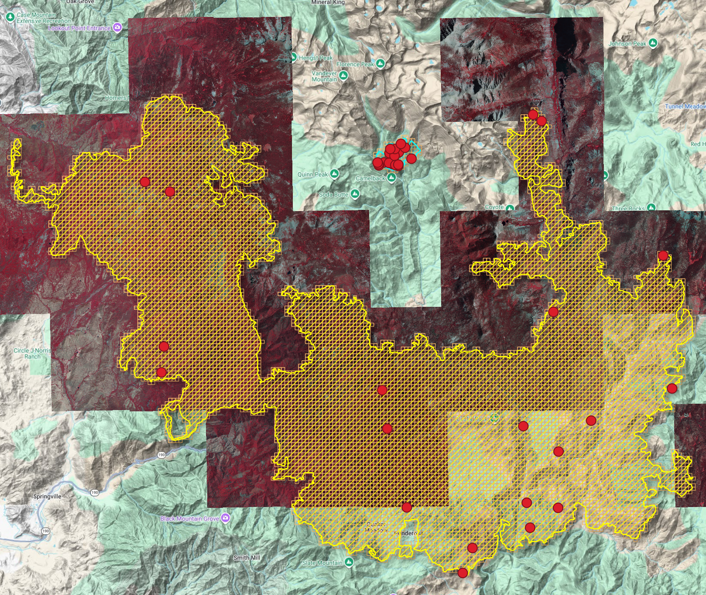
- Open Random points inside polygons (fixed) again.
- Use the same settings as before, but this time enable the Selected features only option.
- Run the tool again and save the output.
- Check the new random points layer and confirm that the points now fall within the part of the fire area where imagery is available for labeling.
- If the layer display does not update right away, click the Refresh button.
Why do this? Random points help spread the work across the study area, and the 100 meter spacing reduces clustering.
Step 6: Use the Random Points to Select a Sample of Grid Cells
Next, use the random points to select a subset of the grid cells.
- Select the
Z17_Castle_2020_tile_boundary_gridlayer in the Layers Panel. - Go to Vector > Research Tools > Select by Location.
- Configure the tool:
- Select features from:
Z17_Castle_2020_tile_boundary_grid - Where the features:
intersect - By comparing to features from: your
random20points layer
- Select features from:
- Click Run.
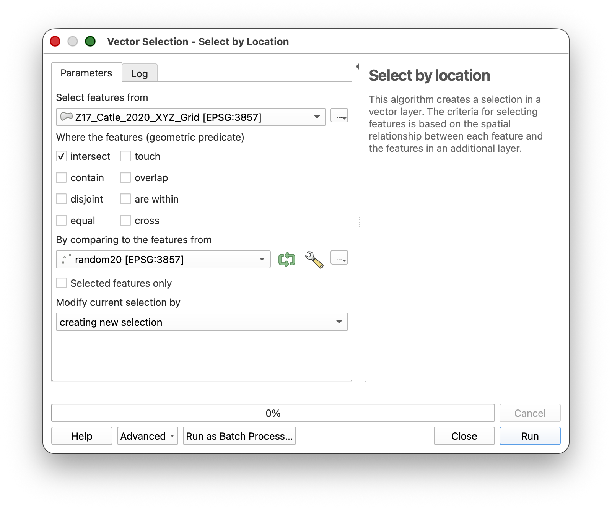
You should now have a set of selected grid cells. You may need to turn off the random20 layer to see the selected polygons more clearly.
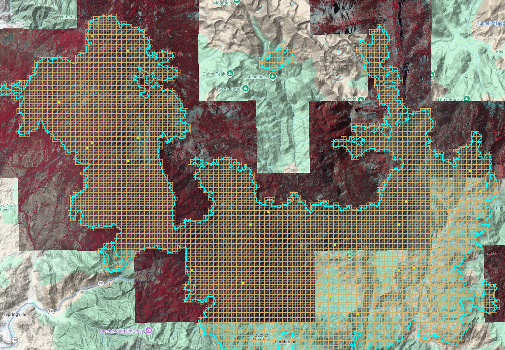
Step 7: Export the Selected Grid Cells to a New Layer
Now export those selected grid cells to a new working layer.
- Right-click
Z17_Castle_2020_tile_boundary_grid. - Choose Export > Save Selected Features As...
- Make sure the Save only selected features option is enabled.
Save the layer to
CastleFire/data/processed/as:sunetid_castle_sample_grid.shp- Leave the default CRS unless QGIS prompts you to choose otherwise.
Click OK.
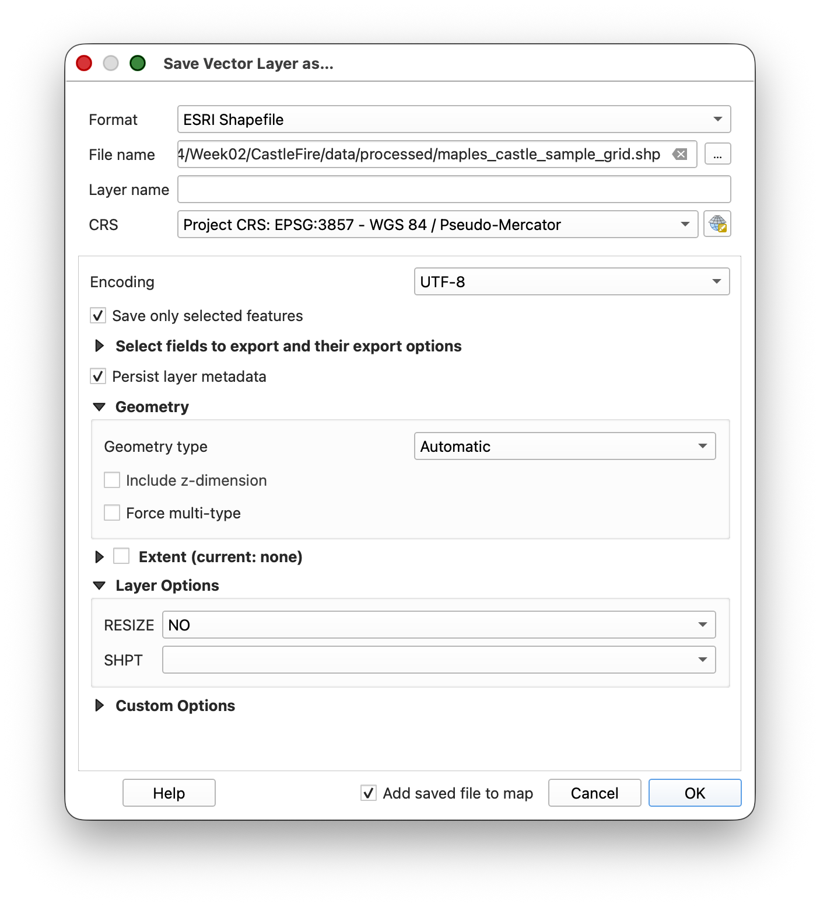
Tip & Trick: Copy the style from the original grid layer and paste it to the new one, then turn off the old grid layer.
Right-click the original grid layer and choose Styles > Copy Style.
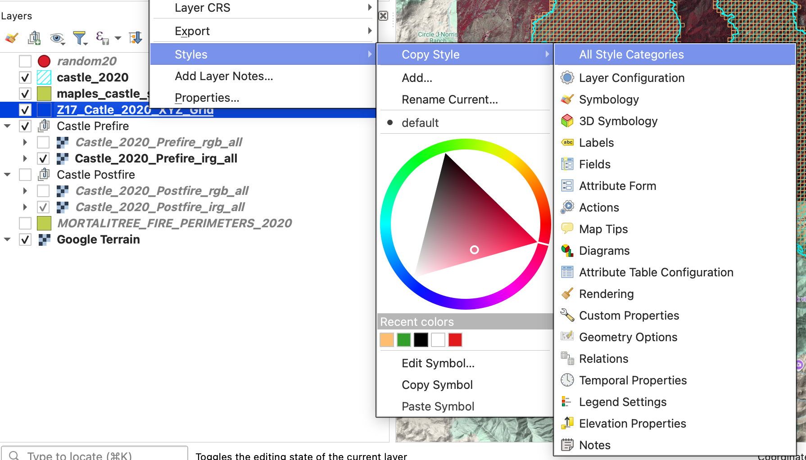
Right-click
sunetid_castle_sample_gridand choose Styles > Paste Style.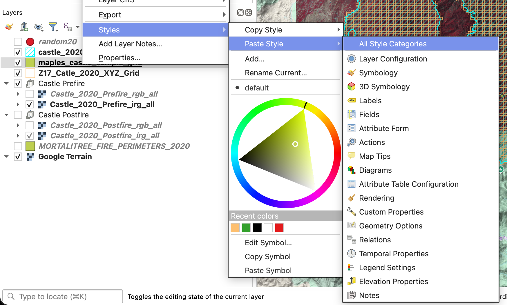
- Turn off the original grid layer.
Step 8: Dock the Attribute Table Below the Map and Use It to Navigate
You will use the exported sample grid as your working unit layer.
- Open the attribute table for
sunetid_castle_sample_grid. If it opens in a separate window, dock it below the map panel by dragging it by the title bar until it snaps into the interface.
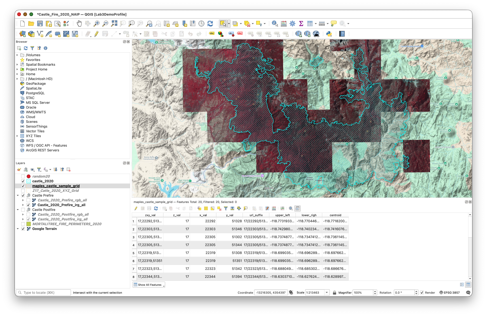
- Use the attribute table tools to:


This lets you work through the sampled grid cells systematically instead of hunting around visually.
Part 4: Create and Edit the Label Layers
Step 9: Create the Postfire Label Layer
Create a new empty shapefile for your first set of labels.
- Go to Layer > Create Layer > New Shapefile Layer.
- Configure the layer:
- File name:
sunetid_castle_postfire_labels.shp - Geometry type: Polygon
- CRS:
WGS 84 (EPSG:4326)
- File name:
- Click OK.
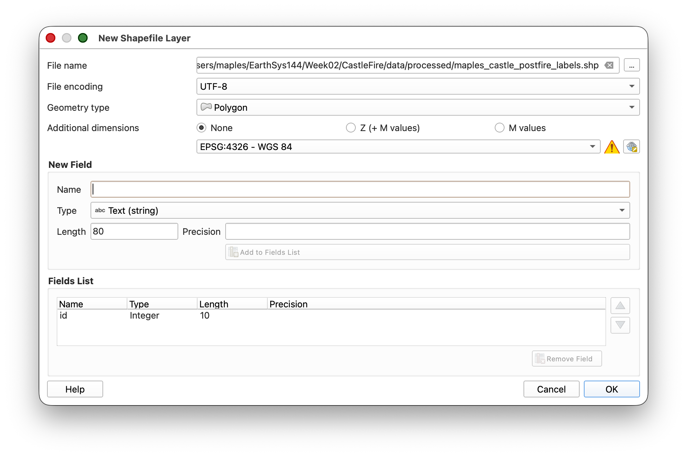
Step 10: Get Ready to Edit
Before you start drawing labels, adjust the digitizing settings so QGIS uses the rectangle tool you need for this exercise.
- Go to QGIS > Settings on Mac, or Settings on Windows.
- Open Options.
- In the Options dialog, go to Map Tools > Digitizing.
- Enable Suppress attribute form pop-up after feature creation.
- Click Advanced at the bottom of the Options panel.
- Click I will be careful.
- Expand
digitizing > shape-map-tools > current. Copy this text:
rectangle-from-center-and-a-pointPaste that text into the Value box for the
currentsetting.

- Click OK to save the setting.
Why do this? This tells QGIS to use a rectangle-based polygon drawing workflow, which makes your tree labels faster and more consistent.
Step 11: Start Editing the Postfire Label Layer
- Make sure the Castle Postfire imagery group is visible.
- Toggle between the RGB and IRG versions of the postfire imagery to decide which one is easier to interpret. You can switch between them while labeling if that helps.
- Select
sunetid_castle_postfire_labelsin the Layers Panel. - Open the layer's styling and set:
- Fill: Transparent
- Stroke: a color that contrasts clearly with the imagery you are using
- Click Toggle Editing.
Step 12: Label Trees in the Postfire Imagery
Now begin the main labeling task.
- In the docked attribute table for
sunetid_castle_sample_grid, select a grid cell and zoom to it. - Inspect that cell in the postfire imagery.
- Only choose grid cells that meet all of the following conditions:
- It should have trees in it.
- It should have no buildings, because we are interested in the behavior of raw forests.
- It should have no roads.
- It should have NAIP imagery available. Some images are currently missing, but they may appear later.
- If the cell meets those conditions, label the trees by drawing rectangles around them using Add Polygon Feature.
- Save your edits periodically.
- When you finish one grid cell, select another sampled grid cell and repeat.
- Continue until you have labeled trees in 3 grid cells.
Labeling guidance:
- Keep the rectangles simple and consistent.
- Work one tree at a time.
- If a sampled cell has no trees, move on to another sampled cell.
- Save often.
Important concept: In this exercise, your rectangles are labels for tree locations, not precise canopy outlines.
Step 13: Save Your Work Frequently
While digitizing:
- Click Save Layer Edits regularly.
- Do not wait until the end of the session to save.
Step 14: Create the Prefire Label Layer by Copying the Postfire Layer
Once you have finished labeling 3 grid cells in the postfire imagery:
- Right-click
sunetid_castle_postfire_labels. - Choose Save Features As...
Save a copy as:
sunetid_castle_prefire_labels.shp- Add the new layer to the project if QGIS does not do this automatically.
This copied layer gives you a starting point for the prefire labels, since trees visible after the fire were also present before the fire.
Step 15: Finish the Prefire Tree Labels
Now switch to the prefire imagery and finish the second label layer.
- Turn on the prefire imagery.
- Start editing
sunetid_castle_prefire_labels. - Return to the same 3 sampled grid cells you already worked on.
- Keep the copied tree labels that already match visible trees.
- Add rectangles for any additional trees visible in the prefire imagery.
- Save edits regularly.
- When finished, stop editing and save the layer.
Step 16: Export Both Label Layers to GeoJSON
When both shapefiles are complete, export each one to GeoJSON.
- Right-click
sunetid_castle_postfire_labels. - Choose Export > Save Features As...
Set:
- Format:
GeoJSON - File name:
sunetid_castle_postfire_labels.geojson - CRS:
EPSG:4326
- Format:
- Save it in
CastleFire/data/outputs/. Repeat the same process for
sunetid_castle_prefire_labels, exporting it as:sunetid_castle_prefire_labels.geojson
Part 5: Final Submission
What to Submit
When you are done:
- Confirm that both files exist in
CastleFire/data/outputs/:sunetid_castle_postfire_labels.geojsonsunetid_castle_prefire_labels.geojson
- Compress those two GeoJSON files into a single
.zipfile. - Upload that
.zipfile to the assignment on Canvas.
Final Checklist
- [ ] You created 20 random points inside
castle_2020 - [ ] The points were at least 100 meters apart
- [ ] You used those points to select a subset of grid cells
- [ ] You exported the selected grid cells to
sunetid_castle_sample_grid.shp - [ ] You used the docked attribute table to move through the grid cells
- [ ] You created
sunetid_castle_postfire_labels.shpinEPSG:4326 - [ ] You labeled trees in 3 sampled grid cells in the postfire imagery
- [ ] You copied that work to
sunetid_castle_prefire_labels.shp - [ ] You finished the prefire labels using the prefire imagery
- [ ] You exported both final layers to GeoJSON
- [ ] You zipped the two GeoJSON files and uploaded them to Canvas
Validation Notes
Your labels will be reviewed as part of a machine learning validation workflow. The goal is consistency and completeness within the 3 grid cells you worked on.
Conclusion
Through this lab, you used QGIS 3.44.7 to:
- generate random sample locations
- select a working subset of grid cells
- navigate spatial work systematically with the attribute table
- create and edit shapefile-based label layers
- label trees in both postfire and prefire imagery
- export final training labels to GeoJSON for submission
These are foundational GIS data creation skills and an important introduction to how image interpretation becomes structured training data.
Next Steps
- Keep your QGIS project file and working layers
- Review any feedback on label consistency when the assignment is graded
- Practice this workflow, since we will keep building on spatial data creation skills
Troubleshooting Common Issues
Selection tools not working:
- Make sure you selected the correct input and comparison layers
- Confirm that the random points actually fall inside the fire boundary
Can't edit/digitize:
Need to delete a rectangle:
- Select the feature
- Press
Delete - Save your edits
Unsure which imagery to use:
- Use the postfire imagery for
sunetid_castle_postfire_labels - Use the prefire imagery for
sunetid_castle_prefire_labels
Additional Resources
- QGIS Documentation: docs.qgis.org
- NAIP Imagery Information: USDA NAIP Program
- GeoJSON Specification: geojson.org
- Web Mercator Tile Scheme: Slippy Map Tilenames
If you encounter issues not covered in the troubleshooting section, consult the course forum or office hours!